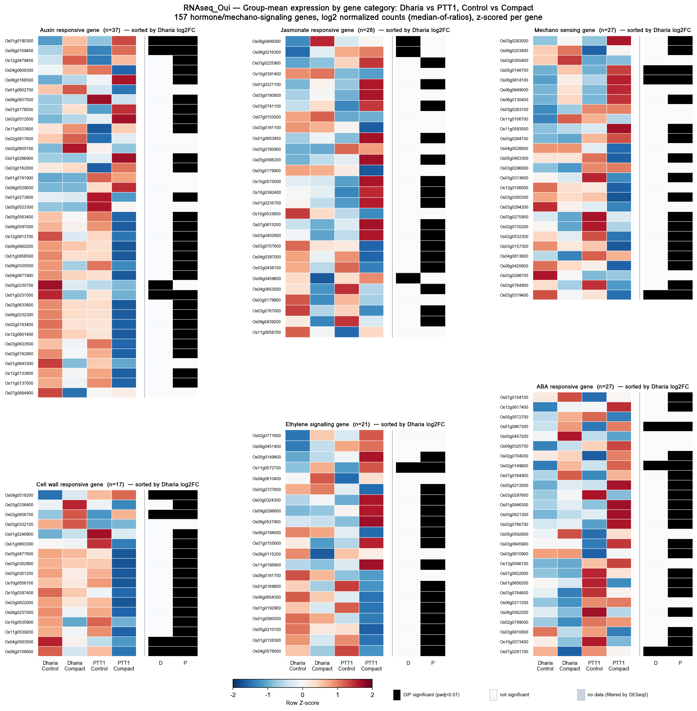

157 ยีนฮอร์โมน/Mechano-sensing แยกตามหมวด — Heatmap เปรียบเทียบ 4 กลุ่มตัวอย่าง
ภาพนี้แสดงระดับการแสดงออกของยีนกลุ่มฮอร์โมนและ mechano-sensing ทั้ง 157 ยีน (6 หมวด: Auxin, Jasmonate, ABA, Ethylene signalling, Cell wall responsive, Mechano sensing — รายชื่อจาก Gene list_Oat.xlsx ที่ใช้ร่วมกับหน้า Correlation Heatmap และหน้า v3 vs v4 Comparison) เปรียบเทียบ ระหว่าง 4 กลุ่มตัวอย่าง — Dharia Control, Dharia Compact, PTT1 Control, PTT1 Compact (v3: 11 samples, ตัด DC3/DN3 ออก) โดยผ่านการ normalize แบบ median-of-ratios (สไตล์ DESeq2) จาก raw counts ทั้งจีโนมก่อน แล้วจึง log2-transform และคำนวณ Z-score รายยีนเพื่อดูรูปแบบขึ้น/ลงโดยไม่ถูกยีน ที่แสดงออกสูงมากบดบัง ภายในแต่ละหมวดยีนถูกเรียงลำดับตามค่า Dharia log2FC (Compact vs Control) จากมากไปน้อย
คอลัมน์ D และ P ทางขวาของแต่ละแถวคือเครื่องหมายนัยสำคัญทางสถิติ (padj < 0.01 หลังปรับด้วย Benjamini-Hochberg FDR) จากการทดสอบ Compact vs Control ภายในสายพันธุ์เดียวกัน — D = ผลทดสอบของ Dharia, P = ผลทดสอบของ PTT1 (ไม่ใช่การเทียบข้ามสายพันธุ์) สีดำ = มีนัยสำคัญ, สีขาว = ไม่มีนัยสำคัญ, สีเทา = ไม่มีข้อมูล (ยีนถูกกรองออก โดย DESeq2 เช่น count ต่ำเกินไป)
Heatmap แยกตามหมวดยีน เรียงตาม log2FC

ข้อจำกัดของ normalization: heatmap ต้นฉบับ (หน้า
Multi-Gene Heatmap) ใช้ค่า vst() จาก
DESeq2 ใน R แต่สคริปต์เดิมไม่ได้ export matrix ที่ผ่าน VST ออกมาเป็นไฟล์ (มีแต่ตาราง DE summary
กับ raw counts) ภาพนี้จึงคำนวณ normalization ใหม่ตั้งแต่ raw counts ด้วยวิธี median-of-ratios
(สูตรเดียวกับที่ DESeq2 ใช้ภายในสำหรับ size factor) แล้ว log2-transform แทน — เป็นวิธีที่ใกล้เคียง
กับ VST มากที่สุดที่ทำซ้ำได้จากข้อมูลที่มีอยู่ แต่ค่า Z-score ที่ได้อาจต่างจาก heatmap ต้นฉบับเล็กน้อย
โดยเฉพาะยีนที่มี count ต่ำ (VST หด variance ของยีน low-count มากกว่า log2 ธรรมดา)
← ดูข้อมูลที่มาของรายชื่อ 157 ยีนและหมวดหมู่เพิ่มเติมได้ที่หน้า Correlation Heatmap และจำนวนยีนมีนัยสำคัญต่อหมวด (v3 vs v4) ที่หน้า v3 vs v4 Comparison